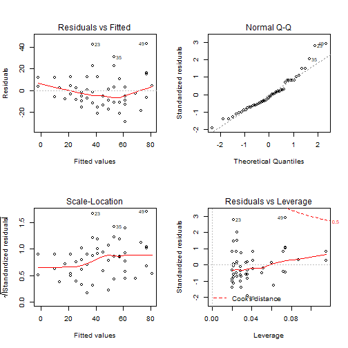
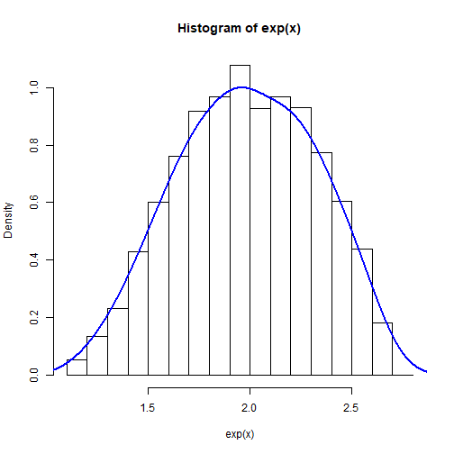
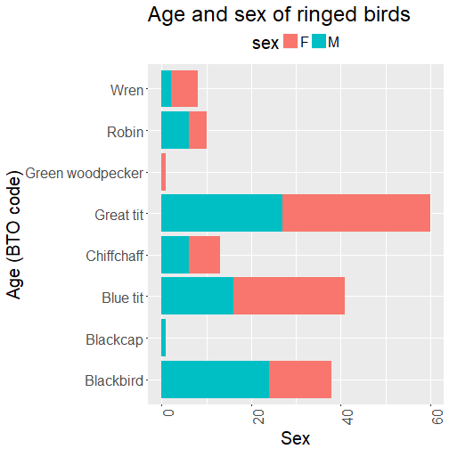

BL6024 - Quantitative Skills for Biologists using R
Lecture 02: Data exploration and visualisation
Lesson 1 recap
Reading and writing data Storing data as objects Data types
- Numeric
- Character
- Factor
Vectors
Dataframes
Finding/extracting data
Troubleshooting & getting help
Reading and writing data
Setting a working directory
setwd("path to directory")
Reading a csv
read.csv("subfolder/subfolder/file.csv", # file, including subfolders if necessary
header = T, # Set the first row as column headers
stringsAsFactors = FALSE) # Do (or do not) read character vectors as factors
Saving a csv
write.csv(object.name, "subfolder/output_file.csv")
Storing data as objects
4/(sqrt(5^3)+18)
## [1] 0.1370786
x <- 4/(sqrt(5^3)+18)
x
## [1] 0.1370786
dat <- read.csv("subfolder/subfolder/file.csv", header = T, stringsAsFactors = FALSE)
p <- plot(x,y)
Data types
Numeric
- Information (always numbers) from something which is measurable
as.numeric
Character
- Character objects are used to represent string values
as.character
Factor
- Variables which take on a limited number of different values (categorical variables). Factors are stored integer vectors with corresponding character vectors as labels
as.factor
Vectors
A vector is a sequence of data elements of the same basic type.
y <- (2:15)
class (y)
## [1] "integer"
z <- c("A", "B", "C", "D")
class(z)
## [1] "character"
length(z)
## [1] 4
Dataframes
A data frame is two-dimensional structure where each column contains values of one variable and each row contains one set of values from each column.
sp <- rep("BLUTI", 50) # repeat a string or number x times
wi <- sample(57:69, 50, replace=TRUE) # generate a vector of given length between integers
we <- runif(50, min=8, max=13) # as above, but allows generation of decimal data
btDat <- data.frame(sp, wi, we)
head(btDat)
## sp wi we
## 1 BLUTI 60 9.462578
## 2 BLUTI 64 12.729201
## 3 BLUTI 67 9.549946
## 4 BLUTI 57 12.689982
## 5 BLUTI 67 12.606858
## 6 BLUTI 62 8.413918
Access columns within a dataframe by using $
btDat$wi
## [1] 60 64 67 57 67 62 69 57 62 63 63 69 65 59 64 61 66 62 58 64 69 63 59
## [24] 62 63 60 67 60 59 64 62 67 67 61 69 60 62 69 68 58 64 64 64 59 63 66
## [47] 65 60 67 64
median(btDat$we)
## [1] 10.66419
Finding/extracting data
y[c(2,5)]
## [1] 3 6
btDat[2:3,1:3] # Dataframe - rows 2-4 of columns 1-3
## sp wi we
## 2 BLUTI 64 12.729201
## 3 BLUTI 67 9.549946
which(btDat == "69", arr.ind=T)
## row col
## [1,] 7 2
## [2,] 12 2
## [3,] 21 2
## [4,] 35 2
## [5,] 38 2
Troubleshooting & getting help
Within R
- help("sqrt") OR ?sqrt
- help.search("Linear Model")
- RSiteSearch("An Introduction to R")
Stack Overflow - https://stackoverflow.com/questions/tagged/r
Facebook - R-Space (https://www.facebook.com/groups/308600982528221)
UCC R Stats Mailing List
https://github.com/arcaravaggi/BL6024_UCC_2017/blob/master/UCCRstats_list_intro.md
Lesson 2
In this class, we will explore:
- Checking normality, homescedastiticty, outliers and transformations
- Basic plots
- ggplot2
Normality
Does a sample of continuous data come from a normal (Gaussian) distribution? We can use visual inspection and normality tests to find out whether our data are normal or not. Normality tests assess the null hypothesis:
- H0: There is no observable difference between data and normal distribution
These tests can inform our analyses. For example, if we want to use 2-sample t-tests to compare two samples of data, both should come from normal distributions and have similar variances.
Normal distributions
x <- rbeta(5000,5,5)
hist(x, prob = TRUE)
lines(density(x, adjust=2), col="blue", lwd=2)
shapiro.test(x)
##
## Shapiro-Wilk normality test
##
## data: x
## W = 0.99667, p-value = 3.872e-09
Let's use the bird dataset (tdat.csv), provided prior to this class.
setwd("C:/Users/Anthony Caravaggi/Dropbox/GitHub/BL6024_UCC_2017/Lecture 02")
tDat <- read.csv("assets/img/tDat.csv", header = TRUE, stringsAsFactors=FALSE)
head(tDat)
## code sp_c sp_l type age sex wing weight
## 1 BLABI Blackbird Turdus merula N 3 JM 135 98.8
## 2 BLABI Blackbird Turdus merula R 3 J 126 88.4
## 3 BLABI Blackbird Turdus merula N 3 J 127 89.8
## 4 BLABI Blackbird Turdus merula N 3 J 132 91.1
## 5 BLABI Blackbird Turdus merula N 3 J 131 95.3
## 6 BLABI Blackbird Turdus merula N 3 M 129 101.3
Histograms and density plots allow us to look at the distribution
greti <- tDat[tDat$sp_c == "Great tit", ]
hist(greti$weight, prob = TRUE)
lines(density(greti$weight, adjust=2), col="blue", lwd=2)
plot(density(greti$wing))

Q-q plots plot the quantiles (fraction of points below a given value) of the first vector against the quantiles of the second vector
qqnorm(greti$weight);qqline(greti$weight, col = 2)

qqnorm(greti$wing);qqline(greti$wing, col = 2)
Formally testing for normality
Eyeballing the data can leave much to interpretation, and there's no guarantee that others will agree with your definition of 'normal'. To quantify the state of our data, we want to calculate the probability ('p-value') that our data are from a normal distribution.
The lower the p-value, the greater the chance that your data deviate from normality. We use a value of 0.05 as a threshold - when the p-value is lower than 0.05, we can have confidence in stating that the data deviate from normality.
There are a number of formal tests available in R, e.g. te nortest package. We'll just stick with Shapiro-Wilk, available in base R via shapiro.test().
Shapiro-Wilk test
shapiro.test(greti$weight)
##
## Shapiro-Wilk normality test
##
## data: greti$weight
## W = 0.98897, p-value = 0.736
shapiro.test(greti$wing)
##
## Shapiro-Wilk normality test
##
## data: greti$wing
## W = 0.45546, p-value = 1.33e-15
Clearly, something is skewing the wing length data. But what is it?
greti$wing
## [1] 23 24 24 24 23 73 73 75 75 76 77 71 68 74 75 75 72 78 73 73 78 74 74
## [24] 77 78 68 68 66 66 73 77 78 72 78 73 80 77 71 76 72 74 75 75 73 77 74
## [47] 74 74 74 74 73 72 74 73 74 76 76 76 71 70 71 74 73 79 75 73 73 74 79
## [70] 74 74 75 78 75 76 76 75 75 73
greti[greti$wing <= 24, ]
## code sp_c sp_l type age sex wing weight
## 170 GRETI Great tit Parus major N 1 23 17.0
## 171 GRETI Great tit Parus major N 1 24 17.2
## 172 GRETI Great tit Parus major N 1 24 16.4
## 173 GRETI Great tit Parus major N 1 24 18.1
## 174 GRETI Great tit Parus major N 1 23 16.7
We need to remove these data so that all remaining birds are fledged juveniles and adults.
greti <- greti[!greti$wing <= 24,]
min(greti$wing)
## [1] 66
shapiro.test(greti$wing)
##
## Shapiro-Wilk normality test
##
## data: greti$wing
## W = 0.94789, p-value = 0.004131
Exercise
Import pDat.csv file provided prior to this class
Determine, via plots and statistical tests, whether b and w are normally distributed
Transformations
Trasformations change the shape of a distribution or relationship by replacing a variable by a function of that variable. It is used to coerce variables to similar distributions and address data which violate model assumptions.
Why might we want to transform our data?
- Convenience
- Reducing skewness
- Equal spread
- Modelling relationships (two or more variables)
Most parametric tests require that residuals be normally distributed and that the residuals be homoscedastic (even variance).
You must be careful about how you report results from analyses with transformed variables!
Standardisation
Standardised values have a mean of 0 and a standard deviation of 1. Standardised variables are useful for comparing variables of different units.
p <- runif(1000, min=2, max=10)
r <- runif(1000, min=50, max=100)
pr <- data.frame(p,r)
head(pr)
## p r
## 1 2.629066 88.12717
## 2 3.445418 65.42077
## 3 4.096653 78.53689
## 4 3.144890 51.17073
## 5 8.247635 73.53833
## 6 3.281782 55.68346
p2 <- as.data.frame(scale(pr))
head(p2)
## p r
## 1 -1.5002542 0.92990509
## 2 -1.1460075 -0.65831528
## 3 -0.8634118 0.25910389
## 4 -1.2764183 -1.65504781
## 5 0.9378591 -0.09052476
## 6 -1.2170155 -1.33940090
Standardisation doesn't affect the shape of the distribution but it changes the relationship
hist(pr$r, prob = TRUE)
lines(density(pr$r, adjust=2), col="blue", lwd=2)

hist(p2$r, prob = TRUE)
lines(density(p2$r, adjust=2), col="blue", lwd=2)
Equal spread (homoscedasticity)
Homoscedasticity of residuals is an important assumption of linear regression. The variance of residuals should not increase relative to the response variable. Transformation of heteroscedastic data so that residuals are evenly spread eases data handling and interpretation.

lmMod <- lm(dist ~ speed, data=cars)
par(mfrow=c(2,2)) # init 4 charts in 1 panel
plot(lmMod)

Top-left
- Residuals vs fitted
Bottom-left
- Standardised residuals
Are points randomly and evenly distributed?
Statistical tests
- Breush Pagan
- NCV
Skew
If data are skewed, they are asymmetric relative to the normal distribution. The mean is typically less than the median and the tail of the distribution is longer on one side than the other.
Use of skewed data can lead to incorrect results if the data are used inappropriately in statistical tests.
If we want to use 2-sample t-tests to compare two samples of data, both should come from normal distributions and have similar variances.
Positive skew
y <- rbeta(5000,2,5)
hist(y, prob = TRUE)
lines(density(y, adjust=2), col="blue", lwd=2)

Negative skew
x <- rbeta(10000,5,2)
hist(x, prob = TRUE)
lines(density(x, adjust=2), col="blue", lwd=2)

Reducing skewness
- square (x2)
- logarithm (log, log10, ln)
- exponential
- square root
- cube root
Which transformation to use?
- What works with the data?
- What makes contextual sense?
- What keeps dimensions simple and convenient?
Positive skew = square root, cube root & log Negative skew = exponential, square root (constant - x), cube root (constant - x), log (constant - x)
Positive (right) skew
hist(y, prob = TRUE)
lines(density(y, adjust=2), col="blue", lwd=2)

Positive skew
hist(y, prob = TRUE)
lines(density(y, adjust=2), col="blue", lwd=2)

Square root
hist(sqrt(y), prob = TRUE)
lines(density(sqrt(y), adjust=2), col="blue", lwd=2)

Negative (left) skew
hist(x, prob = TRUE)
lines(density(x, adjust=2), col="blue", lwd=2)

Negative skew
hist(x, prob = TRUE)
lines(density(x, adjust=2), col="blue", lwd=2)

Exponential
hist(exp(x), prob = TRUE)
lines(density(exp(x), adjust=2), col="blue", lwd=2)

Back to the bird data
plot(density(greti$wing))
Back to the bird data
plot(density(greti$wing))

plot(density(log(greti$wing)))

plot(density(exp(greti$wing)))

plot(density(sqrt(greti$wing)))

Outliers
Outliers are data points which are located an abnomal distance from other values in a dataset. A dataset may have one or more outliers. The definition of 'abnormal' can be subjective, so you should take care to explain your definition.
One commonly-used definition is that of a data point which falls 1.5x the interquartil range above the third quartile or below the first quartile.
Outliers are often problematic for data analyses as they can distort model estimates and predictions.
Identifying and removing outliers
names(greti)[1] <- "code"
greti_outliers <- data.frame(code = rep("GRETI", 10),
sp_c = rep("Great tit", 10), sp_l = rep("Parus major", 10),
type = rep("N", 10), age = rep("3", 10), sex = rep("F", 10),
wing = sample(15:23, 10, replace=TRUE), weight = sample(4:8, 10, replace=TRUE))
greti2 <- rbind(greti, greti_outliers)
With and without outliers
plot(greti2$wing, greti2$weight, main="With Outliers",
xlab="wing length (cm)", ylab="weight (g)", pch="*",
col="red", cex=2)

plot(greti$wing, greti$weight, main="Without Outliers",
xlab="wing length (cm)", ylab="weight (g)", pch="*",
col="red", cex=2)

qqnorm(greti2$weight);qqline(greti$weight, col = 2)

qqnorm(greti2$wing);qqline(greti$wing, col = 2)

To identify the outliers, compute the I and IV quartiles using the quartile function. The compute the range using IQR
quantiles <- quantile(greti2$wing, probs = c(.25, .75))
quantiles
## 25% 75%
## 72.00 75.25
range <- 1.5 * IQR(greti2$wing)
range
## [1] 4.875
We can then subset the data, excluding the outliers
greti_normal <- subset(greti2,
greti2$wing > (quantiles[1] - range)
& greti2$wing < (quantiles[2] + range))
min(greti_normal$wing)
## [1] 68
plot(greti_normal$wing, greti_normal$weight, main="Without Outliers",
xlab="wing length (cm)", ylab="weight (g)", pch="*",
col="red", cex=2)

qqnorm(greti_normal$wing);qqline(greti_normal$wing, col = 2)
Exercise
Determine whether any of the vectors in the pDat dataset exhibit skewness.
- Use plots and statistical tests
- If so, transform the data so that they fit a normal distribution
Determine whether any of the vectors in the yDat dataset have any outliers.
- Use scatterplots plots and qq plots
- Use quartiles
- Identify any outliers and remove
- Plot data without outliers
Plotting data
Bar plots represent data in bars where height is reflective of the value.
r <- c(2,2,2,2,3,3,3,4,5,5,5,5,6,6,6,6,6,6,6,6,6)
r_count <- table(r)
barplot(r_count)

s <- c(3, 2, 25, 37, 22, 34, 19)
barplot(s)

Scatter plots are probably the most commonly used plot type in the biological sciences. Points represent the spatial locations of data from X and Y coordinates.
x <- rnorm(50)
y <- x * 2 + rnorm(50, 0, 0.5)
plot(x, y)
abline(a = 0, b = 2)
A scatterplot uses the generic function plot. We can add a line with the function abline, which uses an intercept (here 0) and a slope (here 2)
We can also plot a line based on a linear regression
plot(x, y, main = "Plot of X by Y", xlab = "X variable", ylab = "Y variable", xlim = c(-2,2), ylim = c(-4, 2))
lm1 <- lm(y ~ x)
abline(lm1, lty = 2, lwd = 2, col = "blue")

Boxplots display the minimum, first quartile, median, third quartile, and maximum.
boxplot(tDat$wing)
boxplot(tDat$wing ~ tDat$code)

Histograms represent the probability distribution of continuous numerical data.
rand <- rnorm(1000)
hist(rand)
hist(rand, main = "Normal distribution (frequency)",
br = -50:50/10)
hist(rand, main = "Normal distribution (frequency)", br = -50:50/10, freq = FALSE)
lines(-50:50/10, dnorm(-50:50/10), lwd = 3, col = "red", lty = 2)
Conditioning plots (coplots)
tDat2 <- subset(tDat, tDat$code %in% c("BLUTI", "CHIFF", "WREN"))
coplot(tDat2$wing ~ tDat2$weight | tDat2$code, columns=3)

tDat2 <- subset(tDat, tDat$code %in% c("BLUTI",
"CHIFF", "WREN"))
coplot(tDat2$wing ~ tDat2$weight | tDat2$code,
cex=1.5, number=3, columns=3,
panel=function(x,y,...) {
panel.smooth(x,y,span=.8,iter=5,...)
abline(lm(y ~ x), col="blue")
} )

Plot aesthetics
Different coloured points for each group (species)
library(car)
unique(tDat$code)
tDat$sp_n <- recode(tDat$code, "'BLABI'=1; 'BLUTI'=2;
'CHIFF'=3; 'GRETI'=4;'GREWO'=5;
'ROBIN'=6; 'WREN'=7; 'BLACA'=8",
as.numeric.result=TRUE,
as.factor.result = FALSE)
plot(tDat$wing, tDat$weight, col = tDat$sp_n, pch="*")

We can also plot subsets
plot(tDat$wing[tDat$sp_n==c(2,3,4,6,7,8)],
tDat$weight[tDat$sp_n== c(2,3,4,6,7,8)],
col = tDat$sp_n[tDat$sp_n==c(2,3,4,6,7,8)],
pch="*")

ggplot
First, we need to load the ggplot package
library(ggplot2)
The following command initiates the creation of the plot with default aesthetics.
p <- ggplot(tDat, aes(code))
We then add the command to draw the barplot
p + geom_bar()

We can easily manipulate the plot by using aesthetic commands
library(ggplot2)
p <- ggplot(tDat, aes(sex, age)) # X by Y
p + geom_bar(stat="identity") + # bar height
theme_classic() + # Standard theme
labs(title = "Age and sex of ringed birds",
x = "Age (BTO code)",
y = "Sex",
caption = "(based on data from the BTO)")
sx <- subset(tDat, tDat$sex %in% c("M", "F"))
p <- ggplot(sx, aes(sp_c)) # X by Y
p + geom_bar(aes(fill = sex)) +
coord_flip() +
theme(legend.position = "top",
text = element_text(size=20),
axis.text.x = element_text(angle=90, hjust=1)) +
labs(title = "Age and sex of ringed birds",
x = "Age (BTO code)",
y = "Sex")

p <- ggplot(tDat2, aes(wing, weight, colour = code)) +
geom_point()
p + labs(colour = "Species code") +
labs(x = "Wing length (cm)",
y = "Weight (g)") +
theme_light()

Boxplots
ggplot(tDat, aes(code, wing)) +
geom_boxplot()

Histograms
ggplot(subset(tDat,code %in% c("ROBIN")), aes(weight)) +
geom_histogram(binwidth = 0.5)


library(ggplot2)
library(magick)
library(here)
p <- ggplot(tDat2, aes(wing, weight, colour = code)) +
geom_point() +
labs(colour = "Species code") +
labs(x = "Wing length (cm)",
y = "Weight (g)") +
theme_light() +
ggtitle("Birds") +
ggsave(filename = paste0(here("/"), last_plot()$labels$title, ".png"),
width = 5, height = 4, dpi = 300)
background <- image_read(paste0(here("/"), "Birds.png"))
logo_raw <- image_read("assets/img/alpaca.gif")
frames <- lapply(logo_raw, function(frame) {
image_composite(background, frame, offset = "+70+800")
})
animation <- image_animate(image_join(frames))
image_write(animation, "assets/img/alpaca_plot.gif")


cva <-matrix(c(21, 28, 35, 29),ncol=2,byrow=TRUE)
rownames(cva)<-c("yes","no")
colnames(cva)<-c("cat","cosmic_alpaca")
cva <- as.table(cva)
cva
## cat cosmic_alpaca
## yes 21 28
## no 35 29
chisq.test(cva, correct=FALSE)
##
## Pearson's Chi-squared test
##
## data: cva
## X-squared = 1.5538, df = 1, p-value = 0.2126
tw <- c(21,35)
ch <- c("cat", "cosmic alpaca")
barplot(tw, names = ch)

tw <- c(21,35)
ch <- c("cat", "cosmic alpaca")
barplot(tw, names = ch)


In-class CA
Use the mDat csv provided prior to the class to answer these questions:
- Extract the 5th - 9th columns for the following genera and derive the mean, median and standard deviation for each column in the resultant dataframe: Antilocapra, Budorcas, Connochaetes, Panthera, Macaca, Ursus
- What is the mean
gestationlength for each Order? - Test the following taxa for normality and outliers: Cercopithecidae (columns =
gestation,b_weight); Bovidae (longevity_yr,a_weight) - Produce a histogram with density curve based on the Carnivora
- Produce a scatterplot with a line of fit of
a_weightbylongevity_yrfor the Mustelidae and Viverridae, combined - Produce one plot using ggplot, including manipulating labels and aesthetics